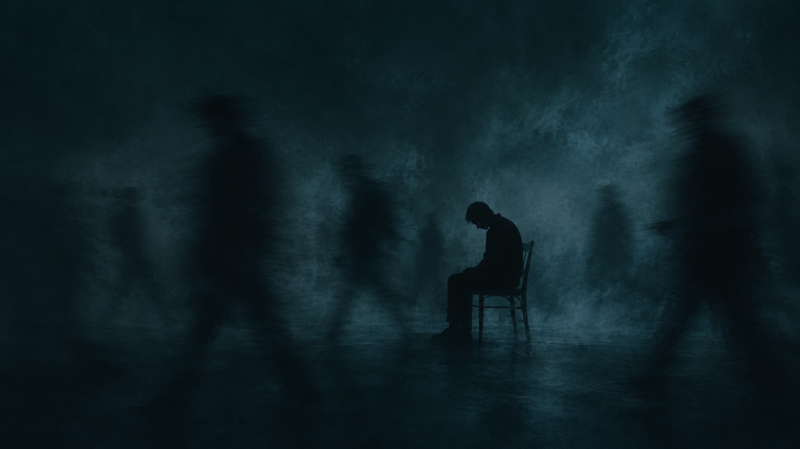
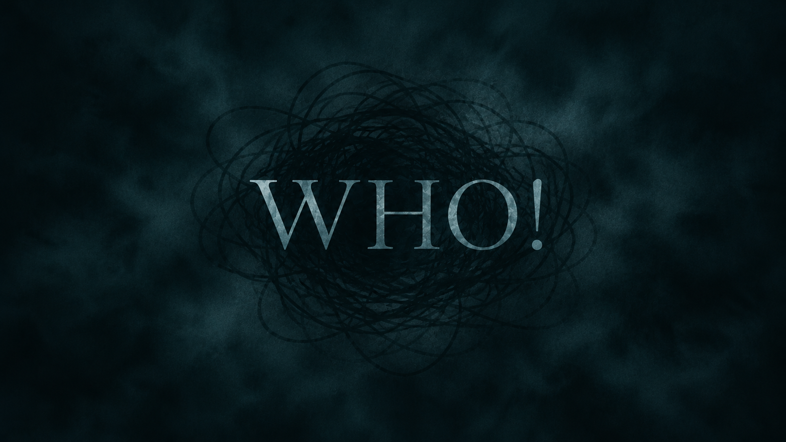
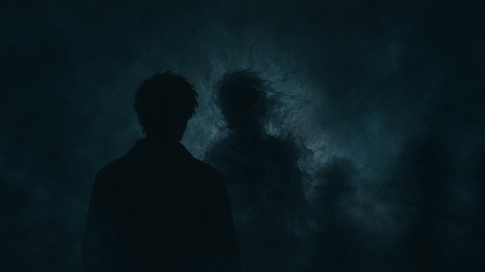

القصة
في عالمٍ لا يمكن فيه الوثوق بالذكريات دائمًا، يجد زيف نفسه عالقًا بين ما يتذكّره وما يختار تصديقه.
ومع بدء وقوع أحداث غريبة، يبدأ الخط الفاصل بين الواقع والوهم بالتلاشي تدريجيًا.
من يكون زيف حقًا؟



"بعض الأصوات أقرب إليك مما تظن"
في عالمٍ لا يمكن فيه الوثوق بالذكريات دائمًا، يجد زيف نفسه عالقًا بين ما يتذكّره وما يختار تصديقه.
ومع بدء وقوع أحداث غريبة، يبدأ الخط الفاصل بين الواقع والوهم بالتلاشي تدريجيًا.
من يكون زيف حقًا؟



أخته الكبرى، تبدو وكأنها تعرف عنه أشياء غريبة لا يعرفها هو حتى عن نفسه.
علي ذكي وإيجابي، ويتمنى الجميع لو كانوا مثله. يبدو مثاليًا أكثر مما ينبغي.
المجهول
هل يمكنك الوثوق بذكرياتك؟